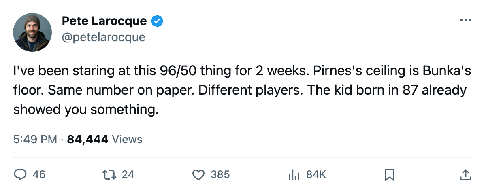
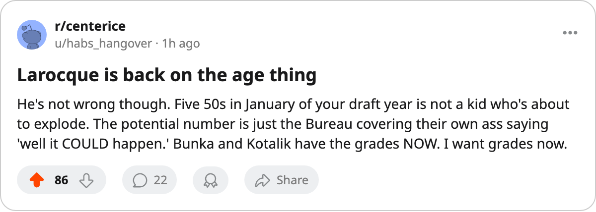

Pirnes Has a Ceiling of 61. Bunka's Floor Is 61. The Bureau Prints the Same 96 on Both.
The Junior Bureau's potential number puts three 2006-class skaters at 96. The grades underneath separate them by two decades of development.
 Pete LarocqueScouting editor · The Prospect File
Pete LarocqueScouting editor · The Prospect FileThe Junior Bureau prints a 96 potential on Tuomo Pirnes and a 96 potential on Valeri Bunka. Same number, same position, same draft year. One has five grades sitting at 50. The other has a floor of 61 and a ceiling of 81.
The potential figure is the Bureau's likelihood of development, not a ceiling. A 96 means the scouts believe this kid can develop further. But the 1986-born kids at the top have been given an extra year of development and they carry 50s across the board. That's not promise. That's a red flag dressed in a high number.
I wrote on Dec 24 that the oldest kids in the 2006 class play the lowest hockey on paper. Six weeks later the picture is sharper. The 1987-born skaters at the top don't just have age on their side. They have actual hockey.
The table that matters
Every skater the Bureau ranks above 90 potential, ordered by birth year:
| Prospect | Pos | Born | Potential | Fifties | Low | High |
|---|---|---|---|---|---|---|
| Toni Kuki | LW | 1986 | 99 | 1 | 50 | 69 |
| Sergej Balodis | C | 1986 | 96 | 1 | 50 | 60 |
| Tuomo Pirnes | LW | 1986 | 96 | 5 | 50 | 61 |
| Vyacheslav Malevich | LW | 1986 | 92 | 2 | 50 | 61 |
| Marko Boman | LW | 1986 | 92 | 0 | 55 | 65 |
| Daniel Lindgren | LW | 1986 | 90 | 0 | 66 | 76 |
| Valeri Bunka | LW | 1987 | 96 | 0 | 61 | 81 |
| Karl Jiranek | RW | 1987 | 93 | 2 | 50 | 72 |
| Vaclav Nedved | RW | 1987 | 91 | 2 | 50 | 71 |
| Karel Kotalik | C | 1987 | 91 | 0 | 64 | 84 |
| Karel Kloucek | RW | 1987 | 91 | 1 | 50 | 74 |
Three 1986-born skaters carry potential above 92 (Kuki, Balodis, Pirnes). Between them they have seven grades at 50. Their highest displayed grades are 69, 60 and 61. Bunka, one year younger, has zero grades at 50, a floor of 61 in SPEED, and an 81 in CHKG. His best single grade is 20 points above Pirnes's best.
Kotalik is the other one nobody outside the Bureau seems to be talking about. A 1987-born center with 91 potential and zero fifties. His SPEED is 64, his SHPW is 73, his PUCK is 74, his CHKG is 84. That is a complete center on paper, a year younger than most of the guys the mock drafts are lining up ahead of him.
Why the potential number fools people
The Bureau's potential is a probability. It answers "how likely is this player to improve?" A player with a 50 SPEED and a 61 potential is flagged as likely to improve because he has room. A player with a 61 SPEED and a 61 potential is flagged the same way because the Bureau doesn't grade room, it grades likelihood.
Pirnes has five attributes at 50 because the Bureau's scouts haven't seen evidence of anything above the floor yet. That doesn't mean the potential will turn. I've tracked this for long enough to know that five 50s in January of a draft year don't all become 65s by June. The potential number says it's possible. The grades say it hasn't started.
Bunka's lowest grade is 61. That's not a kid waiting to be discovered. That's a kid whose worst attribute is better than Pirnes's best.
Who picks this kid
 Florida Panthers sits at 33 points with 42 games played.
Florida Panthers sits at 33 points with 42 games played.  San Jose Sharks sits at 34.
San Jose Sharks sits at 34.  Chicago Blackhawks and
Chicago Blackhawks and  Washington Capitals sit at 35. These are the clubs that will hold the first four picks in what the calendar has as the draft on 2006-06-08, 147 days from now.
Washington Capitals sit at 35. These are the clubs that will hold the first four picks in what the calendar has as the draft on 2006-06-08, 147 days from now.
San Jose GM Jules Tong told The Tunnel's Jan Kowalczyk this week about his team's practice facility: "our practice rink is at zero. Our workout room is at one. I'm paying for a front end that the guys can't actually train in." If the Sharks pick near the top and take a prospect with a 96 potential and a 50 floor, where does that kid spend his first two development years?
Tong also said the thing every GM at the bottom knows: "there's a window where you hand the keys to a young guy before he's ready and he either drives it or he doesn't." That window is wider for the kid whose floor is 61 than for the one whose floor is 50. The kid with the floor of 50 might drive it. He might not. The kid with the floor of 61 has already shown he can drive, and you're not gambling a top-3 pick on a probability.
The board
I'm putting Kotalik 2nd on my board. Bunka 3rd. Kuki 4th. Pirnes 6th.
The Bureau will revise these potential numbers in the spring. If Pirnes moves his grades above 50, fine. If he doesn't, the 96 was always a guess and the 61 was the fact.

